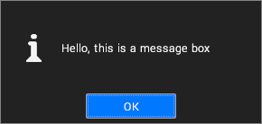
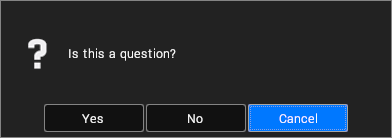

Present a Modal Dialog
Demonstrates presenting messages and questions to the user
Application dialogs in Visionary Render appear modal, however their APIs are not guaranteed to exhibit blocking behaviour. When displaying a message box, it should not be assumed that the plugin will always wait for it to be dismissed before continuing.
In the case of question dialogs, which require a response from the user before continuing, a callback mechanism must be used.
Message Boxes
Simple fire-and-forget message boxes are used to display information to the user.

When a plugin is loaded, it is given a pointer to a message box function, which should be stored by the plugin and called when it wants to display a message.
Question Boxes
Question boxes are used to get a yes/no answer from the user.

When a plugin is loaded, it is given a pointer to a question box function, and a pointer to a response callback registration function. The plugin is expected to store these, and to use the callback registration function prior to presenting the question in order to register a callback function which is called with the user's answer.